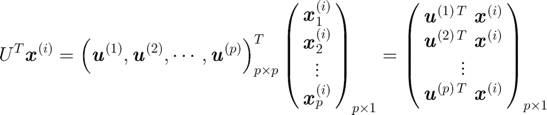
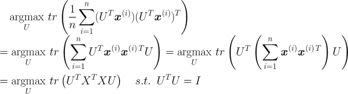

维度灾难
我们拥有的数据量是有限的，当特征很多时，即特征空间维度很高时，数据在高维特征空间很稀疏。并且数据会远离特征空间的中心，造成数据在高维空间分布不均，这使得分类器性能大大降低。
随着维度增加，训练样本的数量要求随指数增加。因此当样本数据不足的时候，维度灾难会带来过拟合情况。
解决维度灾难主要有几种方法：增加数据量，加正则化，降维（特征选择和特征提取）。
特征选择和特征提取
- 特征选择：新特征集是原特征集的一个子集，直接去掉一些特征，特征空间始终不变。
- 特征提取：新特征集是原特征集的低维映射结果，对原始特征空间进行重构。
特征选择是在海量特征里初步筛选出有用的特征，其余的特征直接丢弃。而特征提取是将有用的特征进行降维，尽量保留主要的信息，此时所有有用的特征里的重要信息都基本还在，没有被完全丢弃。先特征选择应，再特征提取。如果特征数不多，可以不做特征选择。如果特征很少，特征提取也不用做。
无监督学习 PCA 降维
主成分分析 （Principal Component Analysis，PCA）降维可以从两个方面理解
- 基于最大投影方差：数据在新的维度上的投影越分散越好，即投影后的方差越大越好。
- 基于最小重构距离：投影后重构的距离越小越好，即原数据与其在新维度上的投影点的距离越小越好。
图中蓝点为经过中心化后（数据中心点为空心点）原特征空间的数据点，红点为数据在方向向量 u1 上的投影（新特征值为原点到投影点的距离）。所有红点到中心点的距离平方和即为方差；蓝点到投影点的距离，即红线为新特征空间点重构回原特征空间点的距离。根据勾股定理可知，由于所有数据点到原特征空间的中心点距离之和为常数，即所有数据的投影方差加上所有重构距离之和是一个常数，因此 最大化投影方差等价于最小化重构距离。
基于最大投影方差推导
PCA 先将原特征空间转换成维度不变的新特征空间，转换方式是通过找到新特征空间的坐标系（或正交基组矩阵）使得所有数据在新特征空间的各坐标轴（各正交基向量）上的投影方差都最大。这样，当你想要降维时（如 p → p′ 维）只需取新特征空间中前 p′ 个最大投影方差对应的正交基向量，组成低维特征空间。例如，下图中展示了 2、3 维空间各自的转换（相当于旋转坐标系），黑色是原特征空间的坐标系，蓝色是新特征空间的坐标系。
多维空间中的 p 个 p 维正交基向量组成的正交基组矩阵 U 为
PCA 首先将所有样本点中心化（减去均值向量），对于中心化后的样本，假设某一样本 $x^{(i)} = ( x_{1}^{(i)} , x_{2}^{(i)} , … , x_{p}^{(i)} )^{T}$ ，它沿着某一方向向量 $u^{(j)} = ( u_{1}^{(j)} , u_{2}^{(j)} , … , u_{p}^{(j)} )^{T}$ 的投影为 $u^{(j) T}x^{(i)}$ ，如下图所示。
注意：$u^{(j) , T}x^{(i)} = x^{(i) T} u^{(j)}$ 没有区别，因为投影（数值）就是两个向量的内积。但是在哪个向量上投影，哪个向量就要单位化处理变成单位向量。也就是说只要限制 $u^{(j) T} u^{(j)} = 1$ ，$x^{(i)}$ 和 $u^{(j)}$ 的内积即为 $x^{(i)}$ 在 $u^{(j)}$ 上的投影。
所有样本在这一方向（正交基向量）上的投影方差为

其中，正交基和正交基组满足约束条件 $u^{(j) T} u^{(j)} = 1$。再看某一样本在各方向向量，即正交基组上的投影为 $U^{ T} x^{(i)}$ （投影值组成的向量）

则上述投影得到投影方差为
对角线求和则为该样本在正交基组 U 上的投影方差，矩阵的对角线求和即为矩阵的迹 ，联想到协方差矩阵的迹（对角线求和）即为方差。
所以，我们的优化目标是最大化所有样本的投影方差，即最大化上面矩阵的迹

上式为带 1 个等式约束条件的优化问题，用拉格朗日函数改写上式
上式对 U 求导取 0，得到
𝜆 为协方差矩阵 XTX 的若干特征值组成的矩阵，且特征值在主对角线上，其余位置为 0，U 为 协方差矩阵 XTX 的 p 个特征向量组成的矩阵。若要将原样本从 p 维降到 p′ 维，需要找到最大的 p′ 个特征值对应的特征向量。这 p′ 个特征向量组成的矩阵 U ‘ 即为低维空间的正交基组。
因此，求样本 x(𝑖) 的 p′ 维的主成分，就是求样本集的协方差矩阵 XTX 的前 p′ 个最大特征值对应的特征向量矩阵 U ，然后对于原始样本 x(𝑖)，只需要用 z(𝑖) = UT x(𝑖) ，就可以把原始样本全部降维。
PCA 具体计算步骤
输入：n 个 p 维样本集 𝐷 = { x(1) , x(2) , … , x(n) }，要降维到的维数 p′
输出：降维后的样本集 𝐷′
对所有的样本进行中心化： x(j) = x(j) − $\bar{x}$
计算样本的协方差矩阵 XTX（p×p）
对矩阵 XTX 进行特征值分解
取最大的 p′ 个特征值对应的特征向量 ( u1, u2 , … , up′ )，将它们标准化后，组成特征向量矩阵 U′
对样本集中的每一个样本 x(𝑖) ，转化为新的样本 z(𝑖) = U′ T x(𝑖) （矩阵形式为 Z = U′TX ）
输出降维后的样本集 𝐷′ = { z(1) , z(2) , … , z(n) }
监督学习 LDA 降维
线性判别分析（Linear Discriminant Analysis，LDA）降维作为监督学习的一种，它可以输出类别。其核心思想是：投影后类内方差最小，类间方差最大。投影后希望相同类别数据的投影点尽可能的接近，而不同类别的数据尽可能的分开。
例如，左图中的两团数据，使用 PCA 降维时，投影的方向会选择 𝜙2，这样数据的投影方差会最大。如果两团数据分别为两种类别，PCA 降维后数据都重叠在一起无法进行分类。而 LDA 降维会选择投影后类间方差最大的方向，使两团数据投影后尽量分开，即图中的 𝜙1 方向，因此 LDA 降维后可以起到分类效果。
右图中的两团数据（分布为红、蓝色圈），此时使用 LDA 降维并不能找到很好的方向使得两类数据投影尽可能分开，但使用 PCA 降维却能找到一个较好的投影方向。
先看二分类 LDA 降维。假设样本集合 𝐷 = ( (x(1), y(1)) , (x(2) , y(2)) , … , (x(n) , y(n)) )，其中 x(n) ∊ ℝp ，𝑦x(n) ∊ {0, 1}。定义第 j 类样本的均值向量和类内方差（这里 Σj 去掉了 1 / n 系数）为
LDA 要找到一个方向向量 $u^{(k)}$ ，将数据投影在这个向量上，使得类间投影的距离尽可能大，同时类内投影方差尽可能小。某个样本 $x^{(i)}$ 在 $u^{(k)}$ 方向上的投影值为 $u^{(k) T}x^{(i)}$ （或 $x^{(i) T}u^{(k)}$ ），约束 $u^{(k) T}u^{(k)} = 1$。则有
- （类间计算）类间投影用各类中心点 $\bar{x}{j}$ 的投影 $u^{(k) T}\bar{x}{j}$ ，并计算两类样本的中心点投影的差值的二范数。
- （类内计算）所有样本在所属类的投影方差（见 PCA 计算）为 $u^{(k) T} X^{T} X u^{(k)}$，并计算两类方差之和。
则优化目标可以写成类间方差与类内方差的比值的最大化
其中，𝑆w 为类内散度矩阵（within-class），𝑆𝑏 为类间散度矩阵（between-class），分子分母均为数值。上式则为二类 LDA 优化的目标。拓展到多类别 LDA，就是要求投影矩阵 U’。下图是二分类 LDA 优化目标 J 的求解
【摘自b站：机器学习白板推导之线性判别分析LDA】
LDA 具体计算步骤
输入：𝐷 = { (x(1) , (1)) , ( x(2) , y(2)) , … , (x(n) , y(n)) }，其中 x(n) ∊ ℝx(p) ，y(i) ∊ {𝐶1，𝐶2，…，𝐶𝑘}，降到 p’ 维
输出：降维后样本集 𝐷’ = { (z(1) , y(1)) , (z(2), y(2)) , … , (z(n) , y(n)) }
类内、类间散度矩阵 𝑆w 、𝑆𝑏
计算矩阵 𝑆w -1 𝑆𝑏
取矩阵 𝑆w -1 𝑆𝑏 对应的最大的 p’ 个特征值和对应的 p’ 个特征向量 ( u1, u2 , … , up’ )，组成投影矩阵 U’
对样本集中的每一个样本的 x(𝑖) ，转化为新的样本 z(𝑖) = U’𝑇x(𝑖)
输出降维后的样本集 𝐷′ = { (z(1) , y(1)) , (z(2), y(2)) , … , (z(n) , y(n)) }
LDA 和 PCA 比较
相同点：
- 两者均可以对数据进行降维
- 两者在降维时均使用了矩阵特征分解的思想
- 两者都假设数据符合高斯分布
不同点：
- LDA 是有监督的降维方法，而 PCA 是无监督的降维方法
- LDA 降维最多降到类别数 k - 1 的维数，而 PCA 没有这个限制
- LDA 除了可以用于降维，还可以用于分类
- LDA 选择分类性能最好的投影方向，而 PCA 选择样本点投影具有最大方差的方
#奇异值分解（Singular Value Decomposition，SVD）
在 PCA 计算中，降维是先求中心化后的协方差矩阵 XTX 的特征值和特征向量，降维时取前 k 个最大特征值对应的特征向量（主成分）组成投影矩阵，即低维空间的正交基组。
实际中，特征数量往往非常大，例如 1w 个特征，则协方差矩阵为 1w × 1w，计算量会非常大。使用 SVD 这种矩阵分解方法可以大大降低运算量。
首先，SVD 可以对任意矩阵进行分解（特征分解却只针对方阵）
Σ 只有主对角线上（Σ𝑖𝑖 ）有数值，每个元素都称为奇异值 σ𝑖 ，且已按大小排序。
U 的列向量是 A AT 的特征向量，U 中的每个特征向量叫做 A 的左奇异向量
V 的列向量是 ATA 的特征向量，V 中的每个特征向量叫做 A 的右奇异向量。
其中奇异值 σ𝑖 的求解为
这样，可以得到 SVD 分解后三个矩阵 U Σ V 分别满足的条件
SVD 分解对降维有什么好处呢？注意到 SVD 的奇异值矩阵中的奇异值是按照从大到小排列，而且奇异值的减少特别的快。所以，可以用最大的 k 个的奇异值和对应的左右奇异向量来近似描述矩阵。
开头说到 PCA 降维，需要找到样本协方差矩阵 XTX 的最大的 k 个特征向量，组成低维正交基组来做降维。而 SVD 也可以找到样本协方差矩阵 XTX 的最大的 k 个特征向量，并且不用计算协方差矩阵，而是取 SVD 分解后的右奇异矩阵 Vn × k 的前 k 列向量组成低维正交基组，达到降维目的。
注：左奇异矩阵可以用于行数的压缩 ；右奇异矩阵可以用于列数即特征的压缩，即 PCA 降维。
Reference
https://www.cnblogs.com/pinard/p/6244265.html
https://www.cnblogs.com/jerrylead/archive/2011/04/18/2020216.html
https://www.cnblogs.com/guoyaohua/p/8855636.html
https://www.cnblogs.com/pinard/p/6251584.html